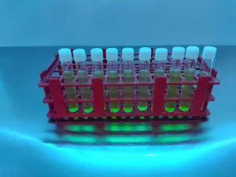
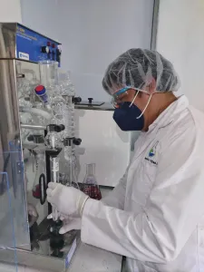
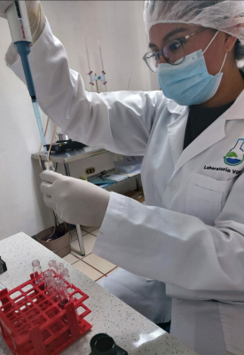

Nuestros Servicios de Análisis

Análisis Microbiológicos
Detección, control y monitoreo de microorganismos claves para asegurar la inocuidad en tus productos industriales.
Leer más →
Análisis Fisicoquímicos
Evaluación detallada de propiedades químicas y físicas bajo estrictos estándares de calidad industrial.
Leer más →
Control de Calidad
Soluciones analíticas integrales diseñadas a la medida de los procesos de producción de tu empresa.
Ubicación y Contacto
Dirección
📍 11 avenida 3-39 zona 4, Colonia Monte Real II, Mixco, Guatemala.
Horario
⏰ 07:00 a.m. – 04:00 p.m. (Lunes – Viernes)
Contáctanos
📞 (+502) 4211-7077 / 4211-4425 / 4224-7412
✉️ info@labvidm.com.gt
✉️ ventas@labvidm.com.gt